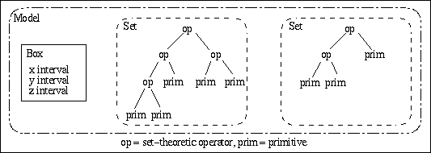
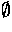
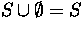
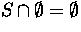
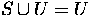
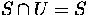

Technical Overview
by Dan
Pidcock
svlis@bath.ac.uk
Copyright © 1994, 1996, 1999 Information
Geometers Ltd and The University of
Bath
The basic component used in svLis is the primitive. There are currently
six simple primitives in svLis: real numbers, half-planes, spheres, cylinders,
cones, and tori. The modeller also allows any implicit function to be used
as a primitive, thus giving access to an enormous range of shapes. Real
numbers are required for arithmetic operations. The remaining five primitives
are half-spaces and therefore divide space into regions. SVLIS
denotes these regions as either solid or air. Using set-theoretic
operators, primitives are combined to create a set-theoretic tree with
primitives at the leaves and operators at the nodes. Such a tree is called
a
set.
A box is a three-dimensional region of interest which is an axially-aligned
cuboid; it is stored in svLis as three intervals1,
one for each dimension. A model is defined as a box together with
one or more sets and defines a group of objects in the region of space
that the box occupies.
The relationship between these elements of svLis are shown in the diagram
below.

Pruning
If the surface of a primitive in the sets of a model does not pass through
the model's box, then either the primitive must be completely solid within
the box, or the box does not contain any part of the primitive (in which
case the primitive is said to be air within the box). If the primitive
is solid within the box, it can be replaced by the universal set U
in the model's set. Conversely, if the primitive is air within the box,
it can be replaced by the empty set .
The set for that box can now be simplified by using the basic set-theory
rules , , 
and .
This process reduces the complexity of the set-theoretic tree that represents
the set and is known as pruning a set to a box.
Recursive spatial division
The box of a svLis model can be recursively divided [Woodwark1980]
into smaller boxes by
cutting it along one of the axes, thus creating
two smaller
sub-boxes. The original model's set is pruned to each
of the new sub-boxes to create two new sub-models. This division is continued
in a recursive manner by dividing the sub-models. However, if it is not
to continue indefinitely terminating conditions must be applied. A simple
division process could use terminating conditions such as: the sub-models
will not be divided if they contain three2
or fewer primitives, or if they are smaller than a minimum size (to stop
the division process at places where more than three primitives come together).
At the end of the division, three types of sub-models will exist:
-
solid models whose box only contains solid;
-
air models whose box only contains air;
-
surface models whose box contains one or more primitives which cannot
be further pruned and whose box may contain surface (a mixture of solid
and air) or just air or solid3.
1An
interval is a continuous section of the real line between two values, and
is written [a,b] where a and b are the bottom
and top end of the interval.
2Three primitives is chosen as the
number of primitives, as that is the number of dimensions being used and
corners of objects will never have fewer than three primitives.
3The way that svLis evaluates
whether a box contains any surface is conservative and cannot confirm accurately
that a box does contain some surface -- see the SvLis
Book on conservative model contents evaluation.
-
[Woodwark1980]
-
J.R. Woodwark and K.M. Quinlan, "The derivation of graphics from volume
models by recursive division of the object space.", Proc. Computer Graphics
1980 Conference, London, (335-343), 1980.